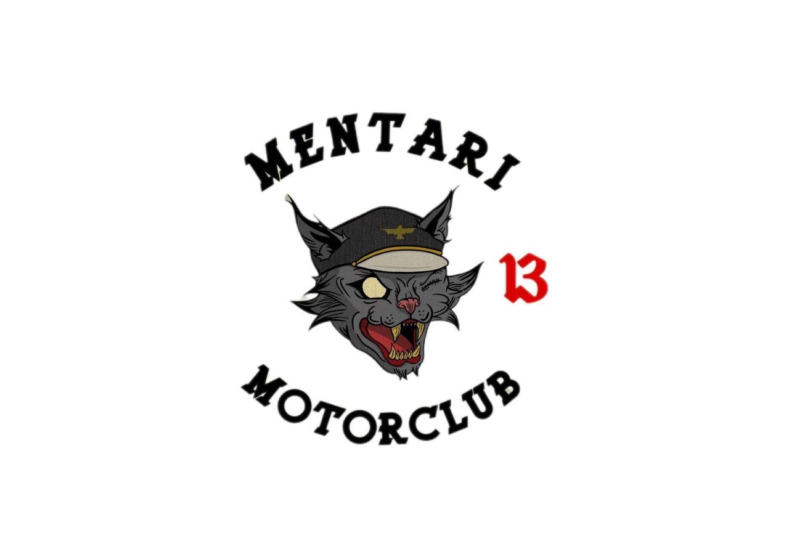
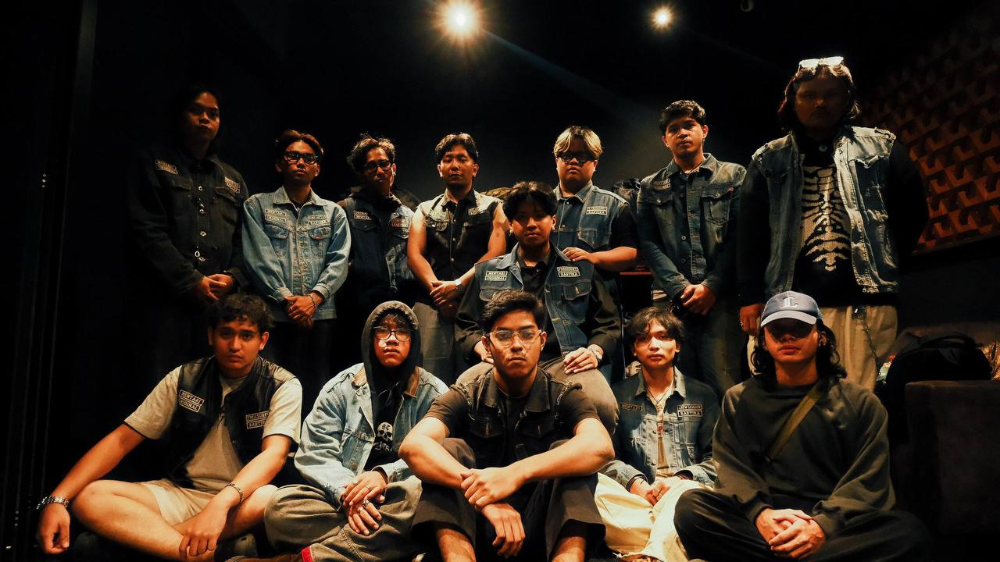
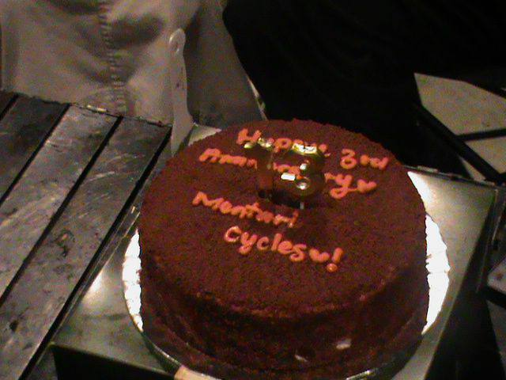
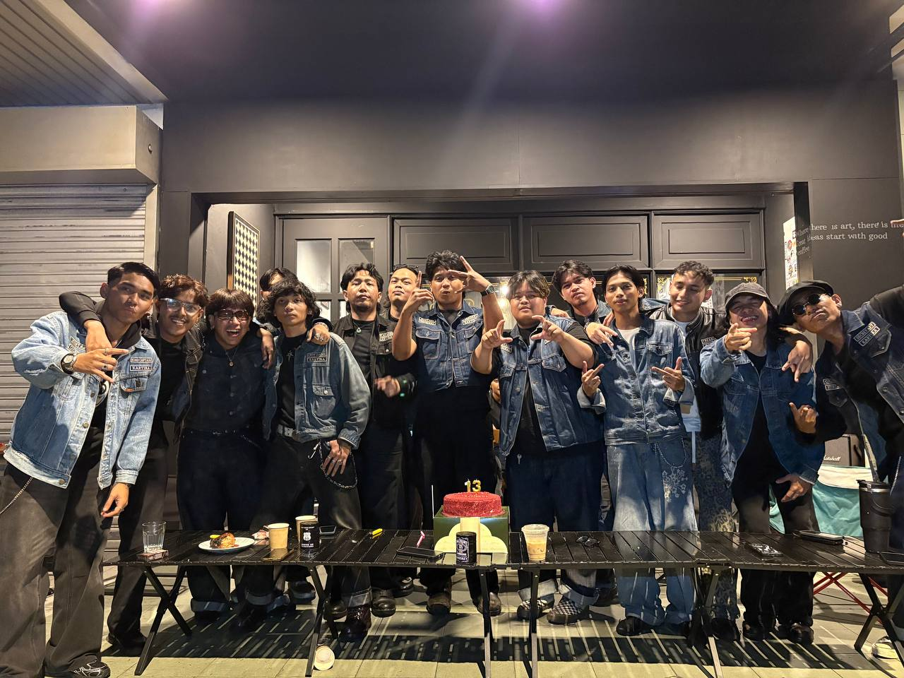

Family Introduction
I am grateful to have a loving and caring family.
They always encourage me to work hard and achieve my dreams.
My family gives me strength, happiness, and motivation every day.
Family Photo
My Family Members
- Father - Shaiful Zamri bin Arifin
- My papa is the silent king of our family, a man who carries heavy responsibilities without asking for sympathy. Behind his tired eyes are sacrifices nobody truly sees, yet he still stands strong through every storm life throws at him.
- Mother - Aminazwil Azwila binti Amran
- My mama is the warmth hidden inside the darkness. Her love feels soft like midnight rain, calming every chaotic moment in our home. No matter how hard life gets, she never stops caring for all of us.
- Brother - Muhammad Aiman Fidzry bin Shaiful Zamri
- My abang moves through life with quiet confidence and fearless energy. He rarely shows weakness, choosing instead to stay strong even when the pressure becomes overwhelming.
- Sister - Adriana Farhanah binti Shaiful Zamri
- My kakak brings comfort and light into the family. She has a gentle soul but a strong heart, always trying to make everything feel better even when she’s fighting her own battles silently.
- Myself - Muhammad Aliff Farhan bin Shaiful Zamri
- I’m the one trapped between dreams and reality, spending nights lost in thoughts while chasing a future I still can’t fully see. The darkness never scares me — it became part of who I am.
- Little Brother - Muhammad Arham Faris bin Shaiful Zamri
- My little sibling is the smallest light in our family, loud, playful, and full of life. Even in the darkest days, their laughter is enough to make the whole house feel alive again.
My Second Family - Mentari Motorclub 13 @ MCMC13
Through every ride, I found brotherhood, loyalty, and people who always stay by my side like blood brothers. From late-night rides to long journeys together, every moment on the road built trust and strong bonds between us. It is not just about motorcycles, but about loyalty, respect, and always having each other’s back no matter what happens.




Mentari's Current Official Line-up
- Alex - The President
- The one who carries the weight of the brotherhood in silence while leading through every storm.
- Qimi - Vice President
- Standing beside the throne, loyal enough to bleed before the family falls.
- Jeffley - Sergeant At Arms
- The shadow that keeps order when darkness starts speaking louder than loyalty
- Hisyam - Secretary
- Every word, every memory, every movement of the family is written through his hands.
- Qyy - Enforcer
- Not every monster is a monster, some are created to protect the brotherhood.
- Aqil - Treasurer
- Behind every ride and every movement, he keeps the family alive without asking for recognition.
- Danny - Road Captain
- The road follows his vision while engines echo through the night.
- Aliff - Advisor
- Wisdom built from scars, guiding the family through chaos without losing direction.
- Kecik - Crew Leader
- Leading the younger souls through loyalty, discipline, and the darkness of the road.
- Danish - Tailgunner
- The last rider in formation, silently guarding the brotherhood from everything left behind in the dark.
- Don - Members
- Ayoub - Members
- Jay - Members
- Different souls, same bloodline, riding through the darkness together under one family called Mentari.